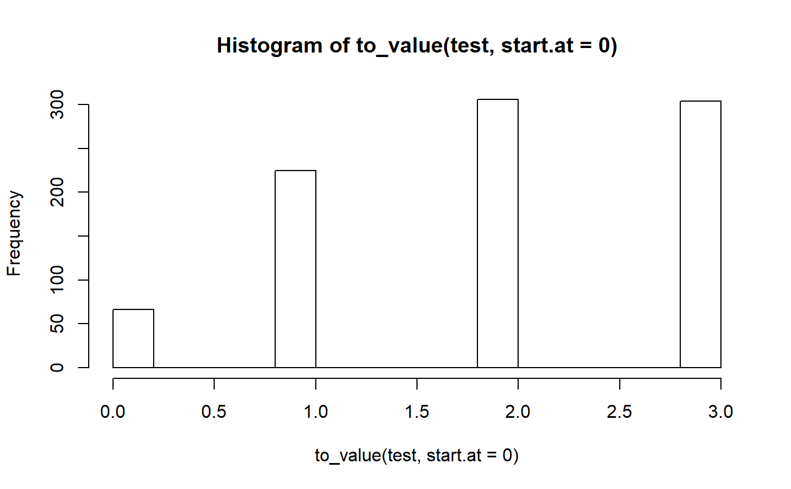

This function converts (replaces) factor levels with the related factor level index number, thus the factor is converted to a numeric variable.
to_value(x, ..., start.at = NULL, keep.labels = TRUE)
| x | A vector or data frame. |
|---|---|
| ... | Optional, unquoted names of variables that should be selected for
further processing. Required, if |
| start.at | Starting index, i.e. the lowest numeric value of the variable's
value range. By default, this argument is |
| keep.labels | Logical, if |
A numeric variable with values ranging either from start.at to
start.at + length of factor levels, or to the corresponding
factor levels (if these were numeric). If x is a data frame,
the complete data frame x will be returned, where variables
specified in ... are coerced to numeric; if ... is
not specified, applies to all variables in the data frame.
This function is kept for backwards-compatibility. It is preferred to
use as_numeric.
#> test #> independent slightly dependent moderately dependent #> 66 225 306 #> severely dependent #> 304table(to_value(test))#> #> 1 2 3 4 #> 66 225 306 304hist(to_value(test, start.at = 0))# set lowest value of new variable to "5". table(to_value(test, start.at = 5))#> #> 5 6 7 8 #> 66 225 306 304# numeric factor keeps values dummy <- factor(c("3", "4", "6")) table(to_value(dummy))#> #> 3 4 6 #> 1 1 1# do not drop unused factor levels dummy <- ordered(c(rep("No", 5), rep("Maybe", 3)), levels = c("Yes", "No", "Maybe")) to_value(dummy)#> [1] 2 2 2 2 2 3 3 3 #> attr(,"labels") #> Yes No Maybe #> 1 2 3# non-numeric factor is converted to numeric # starting at 1 dummy <- factor(c("D", "F", "H")) table(to_value(dummy))#> #> 1 2 3 #> 1 1 1library(sjlabelled) # for numeric factor levels, value labels will be used, if present dummy1 <- factor(c("3", "4", "6")) dummy1 <- set_labels(dummy1, labels = c("first", "2nd", "3rd")) dummy1#> [1] 3 4 6 #> attr(,"labels") #> first 2nd 3rd #> 3 4 6 #> Levels: 3 4 6to_value(dummy1)#> [1] 3 4 6 #> attr(,"labels") #> first 2nd 3rd #> 3 4 6# for non-numeric factor levels, these will be used. # value labels will be ignored dummy2 <- factor(c("D", "F", "H")) dummy2 <- set_labels(dummy2, labels = c("first", "2nd", "3rd")) dummy2#> [1] D F H #> attr(,"labels") #> first 2nd 3rd #> D F H #> Levels: D F Hto_value(dummy2)#> [1] 1 2 3 #> attr(,"labels") #> D F H #> 1 2 3# easily coerce specific variables in a data frame to numeric # and keep other variables, with their class preserved data(efc) efc$e42dep <- as.factor(efc$e42dep) efc$e16sex <- as.factor(efc$e16sex) efc$e17age <- as.factor(efc$e17age) # convert back "sex" and "age" into numeric to_value(efc, e16sex, e17age)#> # A tibble: 908 x 26 #> c12hour e15relat e16sex e17age e42dep c82cop1 c83cop2 c84cop3 c85cop4 #> <dbl> <dbl> <dbl> <dbl> <fct> <dbl> <dbl> <dbl> <dbl> #> 1 16 2 2 83 3 3 2 2 2 #> 2 148 2 2 88 3 3 3 3 3 #> 3 70 1 2 82 3 2 2 1 4 #> 4 168 1 2 67 4 4 1 3 1 #> 5 168 2 2 84 4 3 2 1 2 #> 6 16 2 2 85 4 2 2 3 3 #> 7 161 1 1 74 4 4 2 4 1 #> 8 110 4 2 87 4 3 2 2 1 #> 9 28 2 2 79 4 3 2 3 2 #> 10 40 2 2 83 4 3 2 1 2 #> # ... with 898 more rows, and 17 more variables: c86cop5 <dbl>, c87cop6 <dbl>, #> # c88cop7 <dbl>, c89cop8 <dbl>, c90cop9 <dbl>, c160age <dbl>, c161sex <dbl>, #> # c172code <dbl>, c175empl <dbl>, barthtot <dbl>, neg_c_7 <dbl>, #> # pos_v_4 <dbl>, quol_5 <dbl>, resttotn <dbl>, tot_sc_e <dbl>, n4pstu <dbl>, #> # nur_pst <dbl>